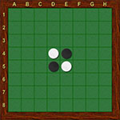
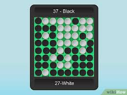

Things You Should Know
- Number of Players: 2
- Materials Needed: 8 x 8 square Othello board, 64 double-sided disks (black on one side, white on the other)
- 
- Objective: Have the most disks of your color on the board at the end of the game 

How to Play Othello
Step 1: Setup
1 Set out the Othello board and give each player 30 disks. Set the square 8 x 8 board in between the players. Decide who wants to play as black and who wants to play as white. Then, give each person 30 disks, which are black on one side and white on the other. Flip all of your disks so the color you chose is face-up.
Step 2: Game Rules
2 Players take turns placing their disks on the board. Each disk must flank an opponent's disk either vertically, horizontally, or diagonally. Flanked disks are flipped to the player's color. The game ends when neither player can make a move, and the player with the most disks on the board wins.
Step 3: Game Rules
3 Players take turns placing their disks on the board. Each disk must flank an opponent's disk either vertically, horizontally, or diagonally. Flanked disks are flipped to the player's color. The game ends when neither player can make a move, and the player with the most disks on the board wins.
Step 4: Game Rules
4 Players take turns placing their disks on the board. Each disk must flank an opponent's disk either vertically, horizontally, or diagonally. Flanked disks are flipped to the player's color. The game ends when neither player can make a move, and the player with the most disks on the board wins.